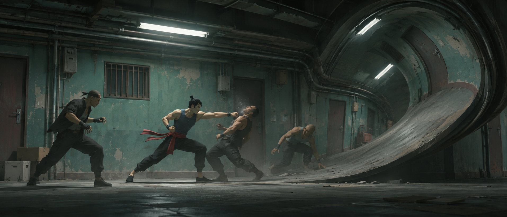

ПРОФИЛЬ◂ SIFU ▸Тест расположения иллюстраций на странице
Витрина мастерской
MY WORKSHOP · 5 СЛОТОВ
5 элементов × 122 px + промежутки 4 pxВысота зависит от PNG
Витрина сообществаДемонстрация расположения следующего блока профиля